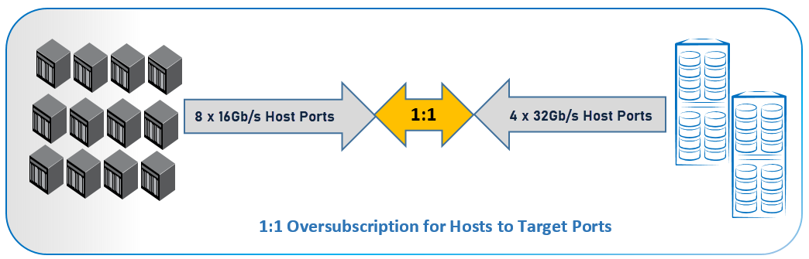
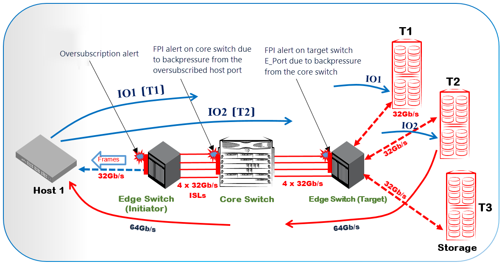

Determining how many hosts to connect to a particular storage port can be narrowed down to three considerations: port queue depth, I/O operations per second (IOPS), and throughput. Of these three, throughput is the only network component. The total bandwidth of the connected hosts should not exceed the supported bandwidth of the target port.
The following illustration describes the 1:1 oversubscription for hosts to target ports.
In practice, however, it is highly unlikely that all hosts perform at their maximum level at any one time. With the traditional application-per-server deployment, the host bus adapter (HBA) bandwidth is overprovisioned. However, with virtual servers, the game can change radically. Network oversubscription is built into the virtual server concept. When servers use virtualization technologies, you should reduce the network-based oversubscription proportionally. It might therefore be prudent to oversubscribe ports to ensure a balance between cost and performance.
An example of 3:1 oversubscription is shown in the following illustration.
Another aspect of data flow is the fan-in ratio, in terms of a device to ISLs. This is also referred to as the fan-out ratio if viewed from the storage array perspective. The ratio is the number of device ports that share a single port, whether ISL or ICL. This is always expressed from the single entity point of view, such as 7:1 for seven hosts utilizing a single ISL or storage port. Congestion might also occur on ISLs when data flows from multiple devices exceed the capacity of the ISL, even though no individual device has requested more data than it can handle.
For determining the device-to-ISL fan-in ratio, a simple calculation is that the storage port should not be oversubscribed into the core. For example, a 32G storage port should have a 32G pipe into the core.
The following diagram shows an example of the improper fan-in ratio, where the congestion condition caused by oversubscription occurring in a fabric consisting of multiple storage targets communicating with a single host. 
The fabric consists of a host with a 32G link that is connected to an edge initiator to target switches and multiple storage devices on 32G links. In a common scenario, when the host is demanding the read I/O from a single target, there will not be any oversubscription as both the host and targets have the same bandwidth. Let us assume that the host is performing the read I/O requests to multiple storage devices on 32G links. The host sends the read I/O requests IO1 to target 1, and IO2 to target 2. In response, the traffic is flowing from the targets to the host, and targets 1 and 2 are returning 32G data each, that is, collectively 64G data. The traffic from the faster storage devices overwhelms the slower 32G link, causing the backpressure in the oversubscribed host port, and this causes the congestion condition on the E_Port of the core switch. The congestion condition that occurred due to the backpressure that is created in the host port is propagated to the edge target switch. The examples in this section describe the MAPS alerts on the congestion conditions due to the oversubscription that is triggered on various devices in the fabric as a result of an improper fan-in and fan-out ratio.
Edge Host Switch Alert Examples
The following example shows the RASLog alert that is received for F_Port 7/35 on the initiator edge switch (Host) to indicate the oversubscription condition.
2024/09/06-06:58:00:747206, [MAPS-3038], 5671/3133, SLOT 1 | FID 1 | PORT 7/35, WARNING, Intiator_Edge_SW, slot7 port35, F-Port 7/35, Condition=ALL_PORTS(PORT_BANDWIDTH==OVERSUBSCRIBED), Current Value:[PORT_BANDWIDTH, OVERSUBSCRIBED, (TXQL=464 us, TX=96.5%) ], RuleName=defALL_PORTS_OVERSUBSCRIBED, Dashboard Category=Fabric Performance Impact, Quiet Time=15 min.The following example shows the oversubscription condition on the host port that is displayed on the corresponding MAPS dashboard output.
Fabric Performance Impact|1 |defALL_PORTS_OVERSUBSCRIBED|06/09/24 06:58:00|F-Port 7/35 |OVERSUBSCRIBED |
(7) | | | | |
The following example shows the oversubscription condition that is displayed on the corresponding MAPS congestion dashboard output.
Congestion DB:
3 Oversubscription State Frequency Table:
========================================
Port |Current Minute State |Frequency|
-----------------------------------------------
F-Port 7/35 |Oversubscribed |5 |
Core Switch Alert Examples
The following example shows the MAPS RASLog alert received for E_Port 9/19 on the core switch that indicates the traffic performance due to congestion, that is, the IO_PERF_IMPACT condition.
2024/09/06-13:00:00, [MAPS-2070], 2692, SLOT 1 | FID 1 | PORT 9/19, WARNING, Core_Switch, slot9 port19, E-Port 9/19, Condition=ALL_PORTS(DEV_LATENCY_IMPACT==IO_PERF_IMPACT), Current Value:[DEV_LATENCY_IMPACT, IO_PERF_IMPACT, (53.1% of 5 secs in VC: 9) ], RuleName=defALL_PORTS_IO_PERF_IMPACT, Dashboard Category=Fabric Performance Impact, Quiet Time=15 min.The following example shows the IO_PERF_IMPACT condition that is displayed in the corresponding MAPS dashboard output for the core switch.
Fabric Performance Impact|1 |defALL_PORTS_IO_PERF_IMPACT|06/09/24 13:00:00|E-Port 9/19 |IO_PERF_IMPACT |
(1) | | | | |
The following example shows the credit-stall condition that is displayed on the corresponding MAPS congestion dashboard output of the core switch.
2 Credit-Stall State Frequency Table:
====================================
Port |Current Minute State |Frame Loss |Perf Impact |Medium |Low |Info |
---------------------------------------------------------------------------------------------
E-Port 9/19 |Perf Impact |0 |2 |0 |0
Edge Target Switch Alert Examples
The following example shows the MAPS RASLog alert that is received for the E_Port 43 on the IO_PERF_IMPACT condition. This indicates that the backpressure is propagated to the E_Port of the target edge switch.
2024/09/06-19:00:01:284580, [MAPS-1003], 275/114, FID 128 | PORT 0/43, WARNING, Target_Edge_SW, port43, E-Port 43, Condition=ALL_PORTS(DEV_LATENCY_IMPACT==IO_PERF_IMPACT), Current Value:[DEV_LATENCY_IMPACT, IO_PERF_IMPACT, (57.0% of 10 secs in VC: 9) ], RuleName=defALL_PORTS_IO_PERF_IMPACT, Dashboard Category=Fabric Performance Impact, Quiet Time=15 min.The following example shows the IO_PERF_IMPACT condition that is displayed in the corresponding MAPS dashboard output for the target edge switch.
Fabric Performance Impact|1 |defALL_PORTS_IO_PERF_IMPACT|06/09/24 19:00:01|E-Port 43 |IO_PERF_IMPACT |
(1) | | | | | |
The following example shows the credit-stall condition that is displayed on the corresponding MAPS congestion dashboard output of the target edge switch.
2 Credit-Stall State Frequency Table:
====================================
Port |Current Minute State |Frame Loss |Perf Impact |Medium |Low |Info |
---------------------------------------------------------------------------------------------
E-Port 43 |Perf Impact |0 |1 |0 |0 |0 |
The following example shows the RASLog alert when the oversubscription state is cleared for the F_Port 7/35 of the host.
2024/09/06-07:17:00:769621, [MAPS-3039], 5689/3151, SLOT 1 | FID 1 | PORT 7/35, INFO, Intiator_Edge_SW, slot7 port35, F-Port 7/35, Condition=ALL_PORTS(PORT_BANDWIDTH==OVERSUBSCRIPTION_CLEAR), Current Value:[PORT_BANDWIDTH, OVERSUBSCRIPTION_CLEAR], RuleName=defALL_PORTS_OVERSUBSCRIPTION_CLEAR, Dashboard Category=Fabric Performance Impact, Quiet Time=15 min.The following example shows the corresponding MAPS dashboard output when the oversubscription state is cleared on the host.
Fabric Performance Impact|1 |defALL_PORTS_OVERSUBSCRIPTI|06/09/24 07:17:00|F-Port 7/35 |OVERSUBSCRIPTION_CLEAR|(56) | |ON_CLEAR | | |The following example shows the RASLog alert for the E_Port 9/19 when the credit-stall condition is cleared on the core switch.
2024/09/06-13:21:00, [MAPS-2071], 2708, SLOT 1 | FID 1 | PORT 9/19, INFO, Core_Switch, slot9 port19, E-Port 9/19, Condition=ALL_PORTS(DEV_LATENCY_IMPACT==IO_LATENCY_CLEAR), Current Value:[DEV_LATENCY_IMPACT, IO_LATENCY_CLEAR, (Duration: 10s)], RuleName=defALL_PORTS_IO_LATENCY_CLEAR, Dashboard Category=Fabric Performance Impact, Quiet Time=15 min.The following example shows the corresponding MAPS dashboard output when the credit-stall condition is cleared on the core switch.
Fabric Performance Impact|1 |defALL_PORTS_IO_LATENCY_CLE|06/09/24 13:21:00|E-Port 9/19 |IO_LATENCY_CLEAR |(2) | |AR The following example shows the RASLog alert for the E_Port 43 when the credit-stall condition is cleared on the target edge switch.
2024/09/06-19:11:01:271770, [MAPS-1004], 279/118, FID 128 | PORT 0/43, INFO, Target_Edge_SW, port43, E-Port 43, Condition=ALL_PORTS(DEV_LATENCY_IMPACT==IO_LATENCY_CLEAR), Current Value:[DEV_LATENCY_IMPACT, IO_LATENCY_CLEAR, (Duration: 10s)], RuleName=defALL_PORTS_IO_LATENCY_CLEAR, Dashboard Category=Fabric Performance Impact, Quiet Time=15 min. The following example shows the corresponding MAPS dashboard output when the credit-stall condition is cleared on the target edge switch.
Fabric Performance Impact|1 |defALL_PORTS_IO_LATENCY_CLE|06/09/24 19:11:01|E-Port 43 |IO_LATENCY_CLEAR |(2) |AR